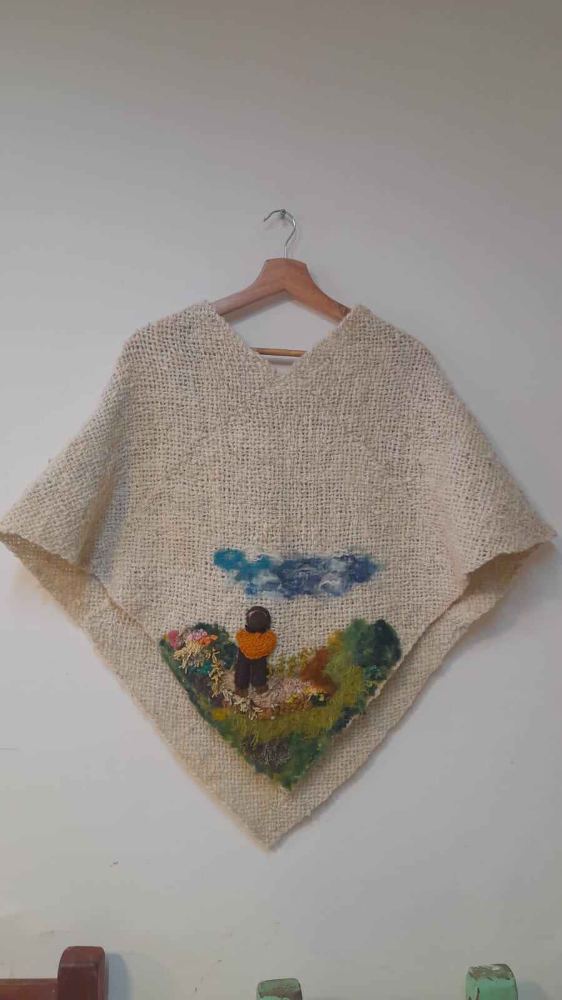

Una ruana que muestra la belleza de boyaca

Estado:Disponible
Precio:$500.000
Descubre la esencia de lo artesanal con esta hermosa ruana tejida a mano, una prenda única que combina calidez, tradición y arte en una sola pieza. Elaborada en tonos naturales beige, su textura gruesa y suave brinda abrigo y comodidad, ideal para climas frescos o para complementar un look auténtico y elegante. Pero lo que realmente la hace especial es su diseño: un delicado paisaje hecho en fibras de colores, donde una figura contempla la naturaleza, evocando tranquilidad, conexión y amor por lo rural. Cada detalle refleja dedicación y creatividad, convirtiéndola no solo en una prenda, sino en una obra de arte que puedes llevar contigo.
🎨© licencia creative commons 2026🎨
creado por Laura Maria Gonzalez Bceerra